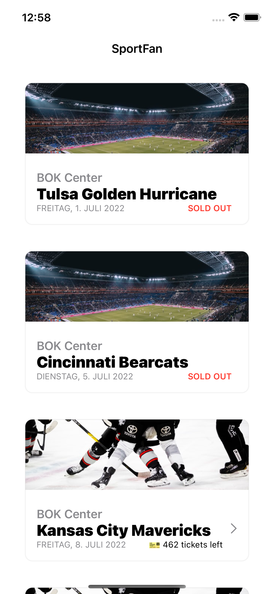
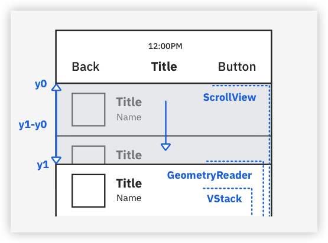
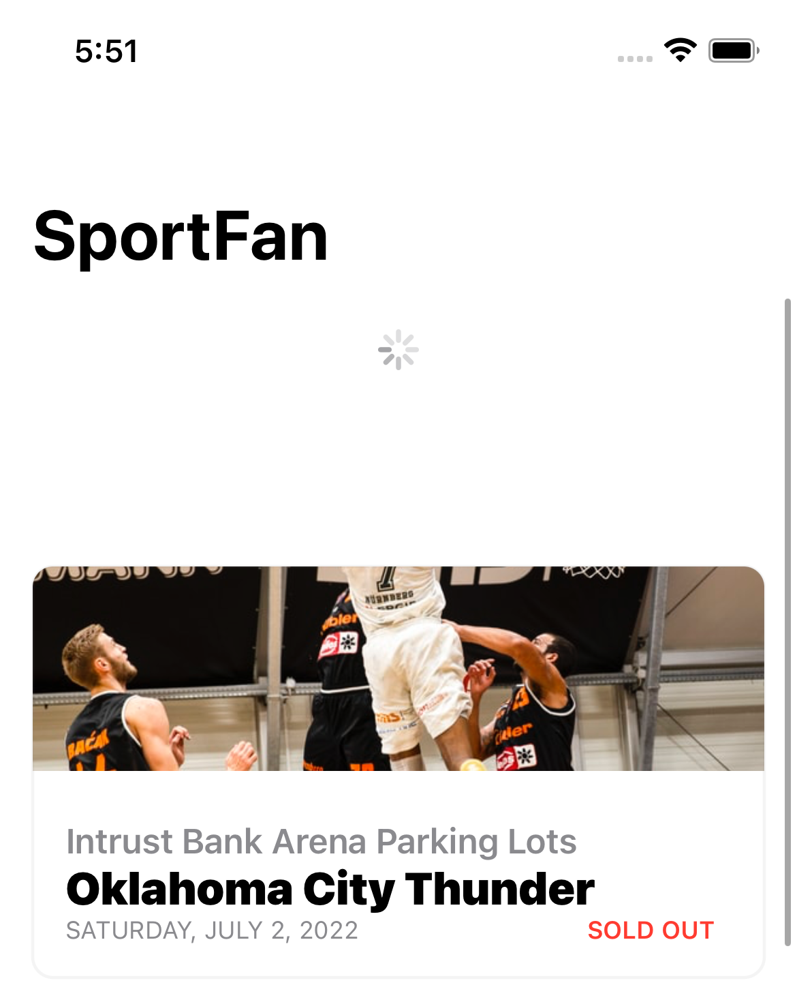
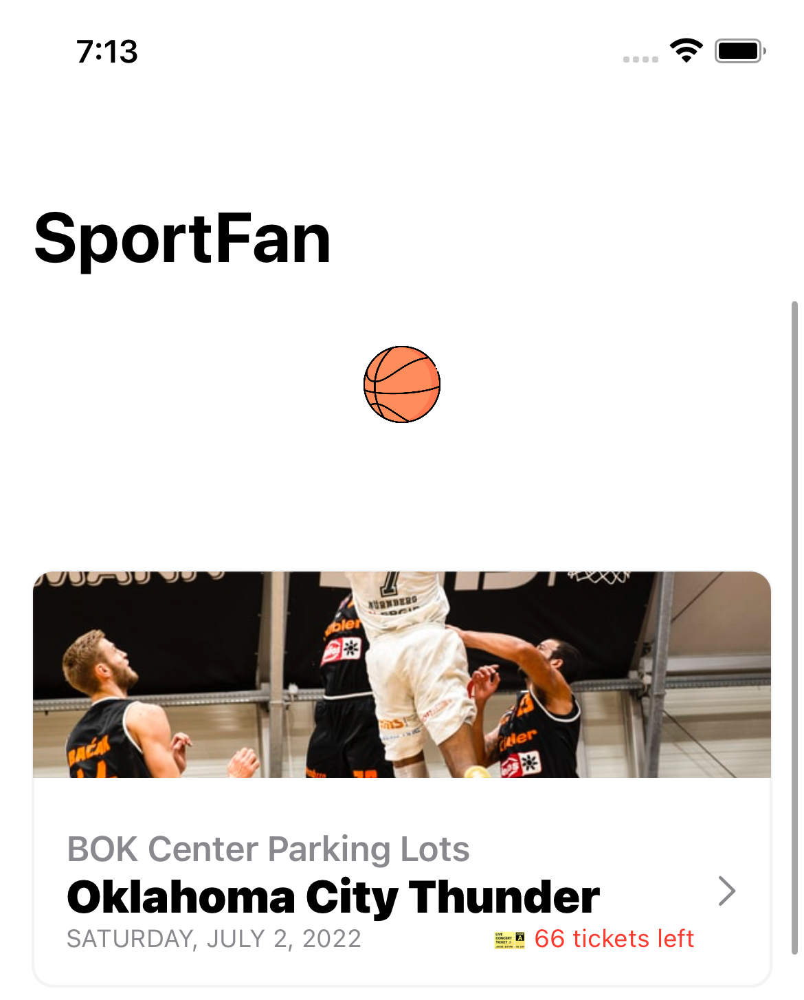
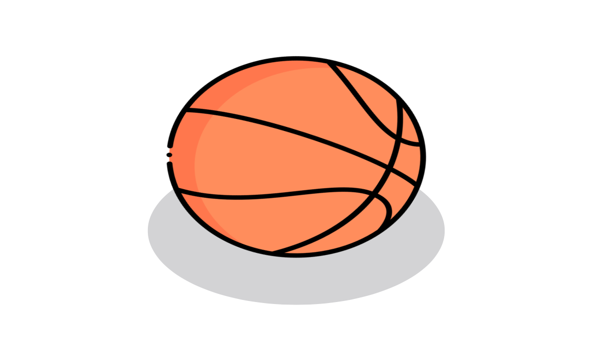
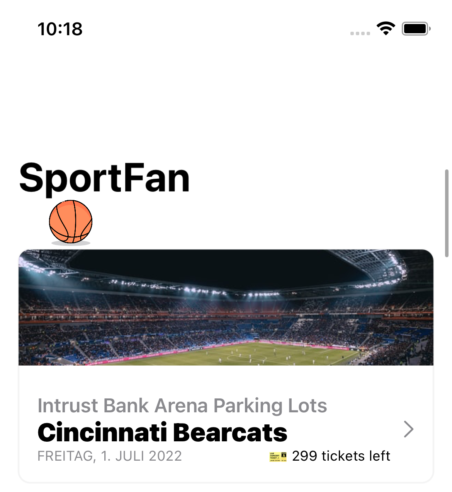
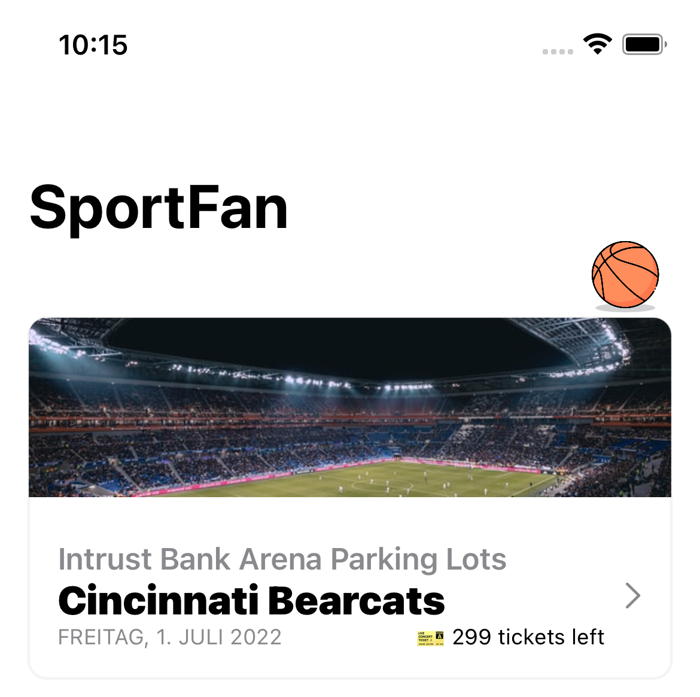

2 Getting to Know SwiftUI Animations¶
In this chapter, and the three following it, you’ll work on an app designed to sell tickets for sports events. You’ll use the concepts you learned in the previous chapter to make it stand out. Your first objective is to replace the plain activity indicator when refreshing the events screen with an interactive pull-to-refresh animation.
Getting Started¶
First, download the materials for this chapter and open starter/SportFan.xcodeproj. You’ll see a few Swift files waiting for you in advance, so you can start working immediately.
Open ContentView.swift and ensure the preview is visible. If it isn’t, enable it by pressing Opt-Cmd-Return* Xcode menu option. If you prefer using a simulator, run the app.

Your app currently has only one screen — the events list that previews all upcoming games. If you’re eagerly waiting for a specific game that wasn’t announced yet, you can pull the list down to fetch the latest data.
In a real-world app, it might take a while to send a request to a server, wait for a response, process it and display it appropriately. So, you must let the user know the request is still ongoing. The built-in activity indicator the app currently uses is a great way to do so, but it’s a missed opportunity to make your app unique and memorable.
Using GeometryReader for a Custom Pull-to-Refresh¶
What would be a fitting animation for a sports-related mobile app? A jumping basketball would do the trick. Its bright color and physically plausible movement make the animation more engaging and fit the app’s topic.
Currently, although convenient, the .refreshable modifier, found in line 43 in ContentView.swift, doesn’t offer the flexibility you need to implement a custom animation. It may do so in future releases of SwiftUI, but today you’ll use a different approach.
You’ll make manual calculations to detect when a user swipes the container to a specific distance to trigger the data update. To achieve this, you’ll use SwiftUI’s GeometryReader. It’s a view that provides vital information suggested by its parent - in this case, a ScrollView, such as its size, frame and safe area insets.
Drafting the Animation¶
In iOS, a ScrollView has a bounce effect by default. Once you reach a boundary of its content, such as the top or bottom of a vertical container or the leading or trailing edge of a horizontal one, you can scroll a bit past the initial or final position. When you lift your finger, it bounces back.
This feature is the foundation of your animation. You’ll put GeometryReader inside ScrollView alongside its content. When you pull the content on top, the geometry reader view will be pulled as well, which allows you to catch the exact value of the scroll offset and use it as needed.

The initial value of the geometry reader’s y-axis offset is marked y0 in the diagram above.
Once a user starts pulling the content down, GeometryReader’s and VStack‘s frames follow the movement with the same velocity. Through GeometryReader, you’ll access the current y1 value at every moment of the gesture, calculate the distance traveled and decide whether the app should trigger a refresh.
Outlining the Geometry Reader¶
First, create a new Swift file named PullToRefresh.swift and add the following enum to it:
enum AnimationState: Int {
case idle = 0,
pulling,
ongoing
}
Since your animation will consist of multiple phases, you need an enum representing its current state. It’s .idle before a user starts interacting with the scroll view, .pulling while the gesture is in progress and then transitions to .ongoing to indicate the ongoing refresh.
Note
An enum is an optimal way to handle state changes since, by its nature, it prevents you from ending up in an invalid state: a variable of the AnimationState type can have only one value out of three.
Add a new PullToRefresh struct below the enum:
struct PullToRefresh: Equatable {
var progress: Double
var state: AnimationState
}
Soon, you’ll use it to share the state of your pull-to-refresh animation between its components and ContentView.
Next, create a new SwiftUI View file named ScrollViewGeometryReader.swift. Add the following properties inside the generated ScrollViewGeometryReader:
// 1
@Binding var pullToRefresh: PullToRefresh
// 2
let update: () async -> Void
// 3
@State private var startOffset: CGFloat = 0
Here’s what the code above does:
- You use the
@Bindingproperty wrapper for thepullToRefreshproperty to establish a two-way connection betweenContentViewandScrollViewGeometryReader. The main container passes aPullToRefreshinstance to the geometry reader. The geometry reader updates its properties when a user interacts with a scroll view to tellContentViewwhen the animation should start or finish. - You call the closure every time your
ScrollViewGeometryReaderdetermines that a refresh is needed. You mark it asasyncto tell the compiler that this closure’s execution might suspend to wait for a response since you’d typically request the data from a server. - You need to keep the initial value of the y-axis offset, y0, to compare it to the current offset of the geometry reader and calculate the length of a user’s swipe.
Xcode may have generated a struct called ScrollViewGeometryReader_Previews, which comes in handy when you want to immediately see the preview of your SwiftUI view without building the app. You can safely remove it now since ScrollViewGeometryReader won’t be visible to users, so there’s nothing to see in the preview.
Next, replace the content of body with:
GeometryReader<Color> { proxy in // 1
// TODO: To be implemented
return Color.clear // 2
}
.task { // 3
await update()
}
Here, you:
- Add
GeometryReader, where you pass a closure that receives an instance ofGeometryProxyand returns some content. - If you don’t want the content of the reader to be visible to a user, you can simply return a transparent view.
- Use
taskto trigger data fetching right before the view appears on the screen.
Using GeometryProxy¶
Now, it’s time to do a bit of math. First, create a constant for the maximum offset, which a scroll view needs to reach to trigger the pull-to-refresh.
Create a new Constants.swift file and add the following to it:
enum Constants {
static let maxOffset = 100.0
}
Here’s the exciting part! Make a function inside ScrollViewGeometryReader, beneath its body, where you’ll make all the calculations needed for the animation:
private func calculateOffset(from proxy: GeometryProxy) {
let currentOffset = proxy.frame(in: .global).minY
}
calculateOffset accepts a GeometryProxy, which is the base for all the computations. You retrieve the frame of GeometryProxy and assign its minY to currentOffset. That’s the y1 you saw earlier in the sketch.
Next, add this switch below currentOffset. It’ll control the pullToRefresh state:
switch pullToRefresh.state {
case .idle:
startOffset = currentOffset // 1
pullToRefresh.state = .pulling // 2
case .pulling where pullToRefresh.progress < 1: // 3
pullToRefresh.progress = min(1, (currentOffset - startOffset) / Constants.maxOffset)
case .pulling: // 4
pullToRefresh.state = .ongoing
pullToRefresh.progress = 0
Task {
await update() // 5
pullToRefresh.state = .idle
}
default: return
}
A few important things happen in the code snippet:
- If
stateis still.idle, you setstartOffsettocurrentOffset. That means the gesture has just started, and it’s the initial value of the offset. Therefore it’s y0. - You change the state to
.pullingas a user starts interacting with the scroll view. - Now, you calculate the progress of the gesture where your y1 currently is between y0 and its maximum value y0 + maxOffset. This value will lay between 0 and 1.
- Once the offset reaches its maximum value, but before the update starts, you change the state property to
.ongoing. - Since
updateis asynchronous, you create a newTaskto invoke it and use theawaitkeyword to suspend the task and wait for the function to return a result. Once you get the value, the execution resumes, and you usepullToRefreshto say the update is complete and the animation is back to.idle.
Since you’ve implemented the function, replace the TODO comment inside the geometry reader with:
Task { calculateOffset(from: proxy) }
Because you may modify some state variables inside calculateOffset(from:), the compiler prevents you from executing it synchronously while the view’s body renders, preventing you from potentially entering a loop and causing undefined behavior.
Go back to ContentView and add an instance of PullToRefresh inside the struct:
@State var pullToRefresh = PullToRefresh(progress: 0, state: .idle)
To verify that your geometry reader can determine when to refresh the data correctly, replace everything inside the body of ContentView with:
ScrollView {
ScrollViewGeometryReader(pullToRefresh: $pullToRefresh) { // 1
await update()
print("Updated!")
}
ZStack(alignment: .top) {
if pullToRefresh.state == .ongoing { // 2
ProgressView()
}
LazyVStack { // 3
ForEach(events) {
EventView(event: $0)
}
}
.offset(y: pullToRefresh.state == .ongoing ? Constants.maxOffset : 0) // 4
}
}
Here’s what you just did:
- You put the newly implemented
ScrollViewGeometryReaderinside the scroll view, passing a binding topullToRefreshand a closure to invoke when the update is needed. - If the update is ongoing, you show a regular progress view. Later, you’ll replace it with a bouncy basketball. But to verify whether the math works, you use a built-in view for now.
LazyVStackcontains the events views instead of aList.- To give the future animation enough space on the screen, you move the events container down using its
offsetmodifier.
The first iteration of your custom pull-to-refresh solution is ready. Hooray! Now, refresh the preview in ContentView or run the app.

As you finish pulling the scroll view, a progress wheel appears, spins for a few seconds and disappears. At the same time, the events list refreshes if any earlier events appear. Don’t worry about its abrupt, non-animated appearance at the moment — you’ll deal with it soon.
It’s also worth checking the output in Xcode. You’ll see an Updated! message print once the app starts and every time you trigger an update during the idle state. In other words, no excessive updates should occur:
Updated!
Updated!
Updated!
Triggering an Animation Explicitly¶
Until now, you’ve built the necessary foundation for your animation using the implementation particularities of the system components and the API offered by SwiftUI.
Now, your goal is to render a ball while the data refreshes and make it jump using explicitanimations. Then, you’ll enhance your animation by adding physical details like rotation, a shadow and even squashing when the ball reaches the bottom.
Before you start, add some new constants to your Constants.swift file, inside the enum:
static let ballSize = 42.0
static let ballSpacing = 8.0
static let jumpDuration = 0.35
Then, create a new SwiftUI view file called BallView.swift and add the following property to the generated view struct:
@Binding var pullToRefresh: PullToRefresh
BallView is the third component of your animation connected via PullToRefresh. Now, any time the state changes inside ScrollViewGeometryReader, BallView also gets notified.
Delete BallView_Previews. Then, add:
struct Ball: View {
var body: some View {
Image("basketball_ball")
.resizable()
.frame(
width: Constants.ballSize,
height: Constants.ballSize
)
}
}
This code makes the ball image easy to reuse without code duplication.
Animating Offset¶
Next, create a new SwiftUI view file — JumpingBallView.swift, which will be responsible for rendering the jumping ball.
Keep the generated preview struct to work on and adjust this part of the animation separately from the app.
Note
You can modify a view in its preview without affecting its appearance in the app. If you zoom the ball in by adding .scale(4) in JumpingBallView_Previews, you can inspect your animation closely and keep its correct size in other components.
Now, add the two following properties inside JumpingBallView to keep track of the animation state and offset of the view:
@State private var isAnimating = false
var currentYOffset: CGFloat {
isAnimating
? Constants.maxOffset - Constants.ballSize / 2 - Constants.ballSpacing
: -Constants.ballSize / 2 - Constants.ballSpacing
}
In the computed currentYOffset property above, if isAnimating is true, the animation is ongoing, and you offset the ball to its bottom position, the “surface”. Always remember to account for the size of the ball. The view’s position corresponds to its top left corner. Therefore, you operate with half of its size to coordinate the position of the center. Also, keep spacing in mind to avoid overlapping the ball and the content. You deduct both of these values from the final offset to move the ball up relatively to it.
Note
In iOS, the center of the coordinate system, the intersection of the x and y-axis, is located in the top left corner. Therefore, the values grow positively on the x-axis when moving towards the right side and downwards along the y-axis.
With these calculations behind you, you can simply add your new Ball with the computed y offset. Replace JumpingBallView’s body with:
Ball()
// 1
.offset(y: currentYOffset)
To make the ball jump the moment it appears, add .onAppear to the ball image right after .offset:
.onAppear {
withAnimation(
.linear(duration: Constants.jumpDuration)
.repeatForever()
) { // 1
isAnimating = true // 2
}
}
It took a while to start animating, but you’re there! Here’s what you achieved above:
- Using
withAnimation(), you explicitly tell SwiftUI to animate the view properties changes resulting from the modifications inside the closure for a defined amount of time -jumpDuration- and repeat it forever. - By modifying
isAnimating, you trigger the ball’s offset change, which now animates according to the animation properties you passed towithAnimation().
Before trying out your changes, add JumpingBallView to BallView’s body, like so:
switch pullToRefresh.state {
case .ongoing:
JumpingBallView() // 1
default:
EmptyView() // 2
}
In the code above, you display a JumpingBallView if the animation is ongoing, or a simple EmptyView otherwise.
Last but not least, you’ll completely replace ProgressView with the BallView you created. Go to ContentView and replace the if pullToRefresh.state == .ongoingcondition with:
BallView(pullToRefresh: $pullToRefresh)
Now, refresh the preview and see your animation’s first steps, or jumps.

Well, you may not be impressed just yet. The ball moves oddly and unnaturally.
However, in the first chapter, you learned that interpolating functions can significantly affect an animation’s feel. It’s time to apply one.
Replace the invocation of withAnimation() in JumpingBallView with:
withAnimation(
.easeInOut(duration: Constants.jumpDuration)
.repeatForever()
) {
Check the preview of JumpingBallView to see the difference. The movement is much more realistic now, but there are so many more things you can improve.
Animating Rotation and Scale¶
First, make the ball rotate and squash while jumping. Add the following two properties to JumpingBallView:
@State private var rotation = 0.0
@State private var scale = 1.0
Now, add .rotationEffect and .scaleEffect to the ball above .offset. The order is important! If you reverse the order, the animation will look jarring.
.rotationEffect(
Angle(degrees: rotation),
anchor: .center
) // 1
.scaleEffect(
x: 1.0 / scale,
y: scale,
anchor: .bottom
) // 2
Here, you:
- Use degrees for the rotation measurement and set the center of the ball as the rotation’s anchor.
- Squash the ball around its bottom side as it hits the surface on the bottom by scaling it along the x-axis inversely to the y-axis.
The final touch is to animate those properties. Make a new function inside JumpingBallView right below its body:
private func animate() {
withAnimation(
.easeInOut(duration: Constants.jumpDuration)
.repeatForever()
) { // 1
isAnimating = true
}
withAnimation(
.linear(duration: Constants.jumpDuration * 2)
.repeatForever(autoreverses: false)
) { // 2
rotation = 360
}
withAnimation(
.easeOut(duration: Constants.jumpDuration)
.repeatForever()
) { // 3
scale = 0.85
}
}
Here’s what you did:
- Since you need to trigger all these animations the moment the ball appears, you move the previously-created jumping animation alongside new ones to a separate function.
- To make the ball rotate indefinitely without changing its direction, you disable auto-reverse. By doubling the duration, you force the ball to make a whole rotation before returning to the top position.
- You use
.easeOutto squash the ball since you want it to slow down slightly as the ball hits the surface to amplify the effect. Makingscaleless than1increases the ball horizontally and makes it smaller vertically, imitating squashing.
Update the .onAppear action of JumpingBallView to only invoke your new animate() method:
.onAppear {
animate()
}
Run your app again, and you’ll see the ball now rotates nicely and gets squashed at its bottom, just as expected — great progress!
Animation Opacity¶
The ball is ready, but what about a little touch of shadow? Add a new property to JumpingBallView to define the shadow’s height:
private let shadowHeight = Constants.ballSize / 2
Then, in JumpingBallView’s ZStack, you wrap the ball image in body and add some shadow to the ball. Replace the body with:
ZStack {
Ellipse()
.fill(Color.gray.opacity(0.4))
.frame(
width: Constants.ballSize,
height: shadowHeight
)
.scaleEffect(isAnimating ? 1.2 : 0.3, anchor: .center) // 1
.offset(y: Constants.maxOffset - shadowHeight / 2 - Constants.ballSpacing) // 2
.opacity(isAnimating ? 1 : 0.3) // 3
Ball()
.rotationEffect(
Angle(degrees: rotation),
anchor: .center
)
.scaleEffect(
x: 1.0 / scale,
y: scale,
anchor: .bottom
)
.offset(y: currentYOffset)
.onAppear { animate() }
}
Here’s what you added:
- You draw a translucent gray ellipse behind the ball and make its size animate with the jumping ball by reusing
isAnimating. It becomes larger when the ball reaches the surface and shrinks when the ball is in the air. - You position the shadow exactly beneath the ball.
- Like you did for scaling, you make the shadow change its opacity depending on the ball position. When it’s closer to the bottom, the shadow is darker.
Take a look at the preview:

Great job! Remember to keep an eye on the whole screen’s integrity when working on a single component. Run the app to see the entire picture.
Making a Complete Picture¶
Your pull-to-refresh animation looks impressive but still feels somewhat out of place. The ball appears out of nowhere and then disappears. The user hardly anticipates this happening, and it can be off-putting.
To make it more natural, you must prepare the user and make it clear how the ball got to the screen. What could be more logical than a ball rolling towards you rather than just appearing in front of your nose?
You’ll make the ball roll in from the left corner toward the center before it starts jumping.
First, for quick access to the value of half of the screen width, add a handy extension to the bottom of BallView.swift:
extension UIScreen {
static var halfWidth: CGFloat {
main.bounds.width / 2
}
}
Add a new struct in BallView.swift to implement the entrance of the animation:
struct RollingBallView: View {
@Binding var pullToRefresh: PullToRefresh
private let shadowHeight: CGFloat = 5
private let initialOffset = -UIScreen.halfWidth
- Constants.ballSize / 2 // 1
var body: some View {
let rollInOffset = initialOffset
+ (pullToRefresh.progress * -initialOffset) // 2
let rollInRotation = pullToRefresh.progress * .pi * 4 // 3
ZStack {
Ellipse()
.fill(Color.gray.opacity(0.4))
.frame(
width: Constants.ballSize * 0.8,
height: shadowHeight
)
.offset(y: -Constants.ballSpacing - shadowHeight / 2)
Ball()
.rotationEffect(
Angle(radians: rollInRotation),
anchor: .center
)
.offset(y: -Constants.ballSize / 2 - Constants.ballSpacing)
}
.offset(x: rollInOffset) // 4
}
}
You’re already familiar with this setup. You have a ZStack with a shadow and a ball inside. Here’s how the movement is different:
- The ball’s starting position in the animation is right behind the left corner of the screen. So, to move it from the center of the screen, where SwiftUI puts it by default, you need to apply a negative offset of half of the screen width and half of the ball size.
- You use
PullToRefresh‘sprogressvalue to move the ball with the same velocity as the user’s gesture. It reaches the screen’s center when the scroll view reaches its maximum offset. When the progress is0,rollInOffsetequalsinitialOffset. When the progress is1, the offset is0, bringing the ball back to the center. - You apply the value of
progressto the rotation and offset, too. - Since the horizontal offset of the shadow is identical to that of the ball, you can apply the offset to their parent view, the
ZStack.
To bring this part of the animation to the picture, add a new condition, case .pulling, to the body of BallView, so the switch statement looks like this:
switch pullToRefresh.state {
case .ongoing:
JumpingBallView()
case .pulling:
RollingBallView(pullToRefresh: $pullToRefresh)
default:
EmptyView()
}
Now, when the pulling gesture is ongoing, but the update hasn’t started yet, you display the rolling ball.
Run the app to check it out:

Finishing the Animation Gracefully¶
A natural way for the ball to disappear from the screen would be rolling away from the user after it stops jumping. All RollingBallView needs are a few adaptations to make it possible.
You’ll add two new states to your animation:
- The state transitions to
.preparingToFinishright after the app completes the update to tell the ball to return to the top from whatever position it’s at while jumping. - Once the ball is back to the top position, the state transitions to
.finishingto tellBallViewto switch back toRollingBallViewto show the final part of your pull-to-refresh animation.
Go back to AnimationState in PullToRefresh.swift and add the preparingToFinishand finishing cases:
case idle = 0,
pulling,
ongoing,
preparingToFinish,
finishing
Then, add some new values to your Constants enum over at Constants.swift:
static let timeForTheBallToReturn = 0.3
static let timeForTheBallToRollOut = 1.0
You give the ball 300 milliseconds to finish the jumping motion and a full second to roll off the screen.
Add the following handy helper function to ScrollViewGeometryReader.swift. You’ll use it to delay the execution of a piece of code:
func after(
_ seconds: Double,
execute: @escaping () -> Void
) {
Task {
let delay = UInt64(seconds * Double(NSEC_PER_SEC))
try await Task<Never, Never>
.sleep(nanoseconds: delay)
execute()
}
}
Then, replace the Task in calculateOffset(from:)’s .pulling case with:
Task {
await update()
pullToRefresh.state = .preparingToFinish // 1
after(timeForTheBallToReturn) {
pullToRefresh.state = .finishing // 2
after(timeForTheBallToRollOut) {
pullToRefresh.state = .idle // 3
startOffset = 0
}
}
}
Here’s what you added:
- Instead of transitioning back to the idle state, your animation moves to a new phase —
.preparingToFinish. It signals the ball to come back to the top to smooth the transition to the rolling out phase. - After that, the state transitions to
.finishing. At this moment, the rolling ball replaces the jumping one. - Finally, once the ball is gone, you reset the animation state, setting its state to
.idleand the offset to0. Now, the pull-to-refresh is in a valid state to execute again if needed.
To make the jumping ball react to the state change, add PullToRefresh to JumpingBallView:
@Binding var pullToRefresh: PullToRefresh
Update the shadow’s .fill modifier to make it transparent when the ball stops jumping. Reminder: it’s the Ellipse inside the ZStack:
.fill(
Color.gray.opacity(
pullToRefresh.state == .ongoing ? 0.4 : 0
)
)
Then, tell the ball to move to the top by updating the currentYOffset property to:
var currentYOffset: CGFloat {
isAnimating && pullToRefresh.state == .ongoing
? Constants.maxOffset - Constants.ballSize / 2 - Constants.ballSpacing
: -Constants.ballSize / 2 - Constants.ballSpacing
}
You’ll work with implicit animations later in the chapter. For now, you’ll use a little trick to tell SwiftUI to animate a state change to .preparingToFinish for timeForTheBallToReturn to smooth its move upwards. Add the following modifier to after Ball’s offset modifier and before its onAppear:
.animation(
.easeInOut(duration: Constants.timeForTheBallToReturn),
value: pullToRefresh.state == .preparingToFinish
)
Finally, don’t forget to adjust the JumpingBallView‘s initializer in the preview struct. If you don’t, you’ll get a compilation error:
JumpingBallView(
pullToRefresh: .constant(
PullToRefresh(
progress: 0,
state: .ongoing
)
)
)
You’re done with JumpingBallView. Now to the rolling ball.
To animate the ball’s rotation, offset and shadow while rolling out, add two new properties to RollingBallView in BallView.swift:
@State private var rollOutOffset: CGFloat = 0
@State private var rollOutRotation: CGFloat = 0
Then, update the x offset of the ZStack to change depending on the state:
.offset(x: pullToRefresh.state == .finishing ? rollOutOffset : rollInOffset)
Do the same for the ball’s .rotationEffect:
.rotationEffect(
Angle(
radians: pullToRefresh.state == .finishing
? rollOutRotation
: rollInRotation
),
anchor: .center
)
To animate these properties, add a new function to RollingBallView:
private func animateRollingOut() {
guard pullToRefresh.state == .finishing else {
return
}
withAnimation(
.easeIn(duration: Constants.timeForTheBallToRollOut)
) {
rollOutOffset = UIScreen.main.bounds.width
}
withAnimation(
.linear(duration: Constants.timeForTheBallToRollOut)
) {
rollOutRotation = .pi * 4
}
}
And invoke by attaching an .onAppear modifier to the ZStack:
.onAppear {
animateRollingOut()
}
Update the switch statement in BallView to account for the new states. Adding .finishing and .preparingToFinish and passing the pullToRefresh binding to JumpingBallView. The entire switch statement should look like this:
switch pullToRefresh.state {
case .ongoing, .preparingToFinish:
JumpingBallView(pullToRefresh: $pullToRefresh)
case .pulling, .finishing:
RollingBallView(pullToRefresh: $pullToRefresh)
default:
EmptyView()
}
Now, the rolling ball view displays both the animation’s entrance, .pulling, and its exit, .finishing. The jumping ball will take over the .ongoing and .preparingToFinishphases.
As a final touch, update the .offset of the LazyVStack in the ContentView to wait for the ball to stop jumping before getting back to the initial position:
.offset(y: [.ongoing, .preparingToFinish]
.contains(pullToRefresh.state) ? Constants.maxOffset : 0
)
Run the app to see the latest changes.

Now the animation doesn’t look out of place and has a logical and seamless flow. Only a few final touches are missing!
Polishing With Implicit Animations and Advanced Interpolation Functions¶
Explicit animations are great for triggering an animation at a specific point or animating multiple view properties by modifying a variable in a single place. Remember how isAnimating was solely responsible for the shadow animating its opacity and scaling perfectly to the beat of the ball?
On the other hand, you may need to animate one single view depending on a variable value that you modify in multiple places. That’s where implicit animations come to the rescue, using View’s modifier — .animation(:value:). SwiftUI animates any change to the value parameter using the animation you pass as the first argument.
For instance, pullToRefresh.state affects the offset of the events container when pull-to-refresh starts and finishes. If you animate this change explicitly via withAnimation to enhance the container’s movement, you’ll break the behavior of other views dependent on the shared state.
An easy way to achieve this change in an isolated manner is to add the .animation(:value:) below the .offset of the LazyVStack in ContentView:
.animation(
.easeInOut(duration: Constants.timeForTheBallToReturn),
value: pullToRefresh.state
)
That smooths the movement slightly, but you can go further using a spring animation for the pull-down movement.
Add these new properties to ContentView:
private let ease: Animation = .easeInOut(
duration: Constants.timeForTheBallToReturn
)
private let spring: Animation = .interpolatingSpring(
stiffness: 80,
damping: 4
)
With the setup above, you instantiate a bouncy spring animation with a relatively low damping and ensure the animation bounces a few more times before settling down.
Now replace the .animation(:value:) modifier you added recently with:
.animation(
pullToRefresh.state != .finishing ? spring : ease,
value: pullToRefresh.state
)
The code above lets you alternate between two different timing curves, ease and spring, depending on the state of the pull-to-refresh.
Run the app and check out what you have so far — simply remarkable and delightful!
Creating a Custom Timing Curve¶
While working with animations or computer graphics in general, you inevitably end up needing a rather specific or unusual timing curve.
Interestingly, engineers faced this problem before animations as we know them came into existence. In the 1960s, the auto industry reluctantly introduced software into the car design process. One of the challenges they faced was programming the complex curves of a car’s bodywork.
At the time, Pierre Bézier, a french engineer, came up with a mathematical formula defined by a set of “control points” describing a smooth and continuous curve.
Nowadays, any graphic design tool like Photoshop, Figma or Sketch will offer you Bézier curves to build complex curves. And SwiftUI is no exception. This lets you create a custom interpolation function by defining a quadratic Bézier curve with two control points:
static func timingCurve(
_ c0x: Double,
_ c0y: Double,
_ c1x: Double,
_ c1y: Double,
duration: Double = 0.35
) -> Animation
To build such a curve, you may use one of many online tools for Bézier curves preview, such as cubic-bezier.com. By dragging the control points, you’ll receive precise coordinates to achieve the curve.
To enhance the rolling-in animation of the ball, you can use a custom timing curve to make it bounce sideways slightly, as if the ball was affected by inertia, if the user stops pulling the events container for a brief moment halfway through.
Add a new property inside RollingBallView:
private let bezierCurve: Animation = .timingCurve(
0.24, 1.4, 1, -1,
duration: 1
)
Immediately apply it on the ZStack in the body property of RollingBallView:
.animation(
bezierCurve,
value: pullToRefresh.progress
)
Run the app one final time and play with your now-complete pull-to-refresh animation. Fantastic progress!
Don’t hesitate to experiment with the numbers and the interpolating functions. That’s the fun part of crafting animations. :]
Key Points¶
GeometryReaderis a SwiftUI view, which takes up all the space provided by its parent and allows accessing its size, frame and safe area insets through aGeometryProxy.- Avoid performing state changes directly inside a view’s body, as it may cause an undesired render loop.
- Use interpolation functions to make animations feel more natural and physically realistic.
- Try not to catch a user off guard with your animations. The behavior should be expected and well placed in the app.
- Use
withAnimation()to animate multiple views or properties of a view from one place explicitly. - Use
.animation(:value:)to trigger a single view animation by modifications happening in the shared state of multiple components implicitly. - A Bézier curve is defined by a set of control points and can be helpful in various aspects of computer graphics.
Where to Go From Here?¶
- If you want to learn more about different Bézier curves, visit the Wikipedia page. It offers a detailed and demonstrative overview.
- Disney’s animation principles may be handy when developing an animation on a mobile device. A few of them, like “Squash and stretch”, “Anticipation” or “Slow in and slow out,” may already be familiar to you. :]